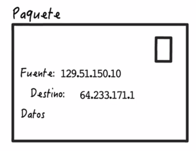

Estas son las versiones de la web:
| Páginas estáticas | Software tradicionales: Extensiones propias del HTML. |
| Aparece primer Navegador gráfico:Mosaic. Nace Netscape Navigator) | El individuo no interactúa con el contenido de la página. No podían comentar, responder o citar. |
| Contenido aportado sólo por expertos: los usuarios sólo se podían comunicar con el Webmaster a través de enlaces o formularios web de correo electrónico. | Sitios direccionales y no colaborativos |
La Web 2.0 está formada por distintas plataformas que permiten la publicación de contenidos y también hay portales de alojamiento de fotos, videos, audio, etc. Esta web permite la oportunidad de interactuar y comunicarse con otros usuarios.
| Páginas dinámicas, sitios más interactivos (Ajax) | Tecnología VHX fue el principal elemento para lograr interactividad |
| El usuario tiene un papel activo en la estructura del contenido y esto impulsa la creación de páginas web, programas, aplicaciones,etc.. | Se pueden compartir los contenidos de forma pública o privada. |
| Aparece Firefox, Opera, Explorer, Google Chrome | Aparecen redes sociales, comercio electrónico, wikis. |
La Web 3.0 está formada por distintas plataformas que permiten la publicación de contenidos y también hay portales de alojamiento de fotos, videos, audio, etc Esta web permite la oportunidad de interactuar y comunicarse con otros usuarios.
| Web inteligente | Web Unicua: los dispositivos están SIEMPRE conectados a internet. |
| Web Semántica : web por recomendación (netflix es un ejemplo) | Internet de las cosas |
El trozo de información que se transmite entre los nodos de una red se llama TRAMA o paquete.
Principio de que todo el tráfico de Internet se debe tratar por igual, es decir, que los proveedores de servicios de Internet y los gobiernos deben tratar todos los datos de la misma forma, no discriminando o tarifando de forma diferente a diferentes usuarios, contenidos, plataformas web, aplicaciones o el tipo de equipo conectado o el modo de comunicación.
Esto significa que la neutralidad de la red obliga a que, por ejemplo, Netflix no puede cobrar a los usuarios más para proveerles mayor ancho de banda, o Comcast no puede ralentizar las conexiones de red de los que tienen sitios de intercambio de archivos.
¿Cómo asegurar la privacidad de los datos y cómo garantizar que personas malintencionadas no puedan utilizar esta información para explotarnos o extorsionarnos?
La computación en nube está cambiando la forma en la que desarrollamos aplicaciones web. La computación en nube es el tipo de informática basada en Internet, con recursos compartidos de computación, almacenamiento, por ejemplo, proporcionados bajo demanda, donde usted paga por lo que utiliza y los servicios automáticamente escalados de acuerdo a sus necesidades.
La computación en nube le permite evitar el coste inicial de infraestructura, que en el pasado hizo muy difícil de construir y mantener aplicaciones web.
Con la gran cantidad de datos que pueden recogerse de todo tipo de sensores, incluyendo Internet de las cosas (IoT), ahora hay una capacidad sin precedentes para analizar datos y descubrir nuevos hechos.
Esto permite a las compañías tomar decisiones de negocio más informadas, pero esto también permite la recogida de datos sobre cómo las personas están navegando por Internet.
Así que se pueden dirigir hacia estos usuarios y hacerles ofertas publicitarias individualizadas de productos y servicios también.